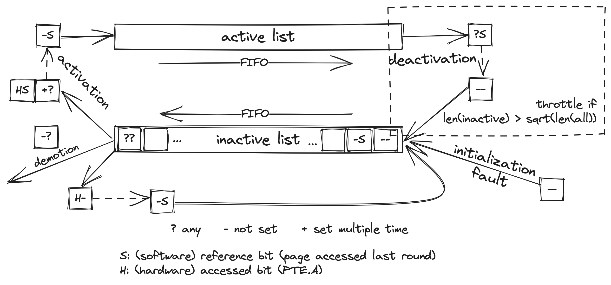

The active/inactive lists is Linux's attempt in implementing a LRU. This kind of LRU is often referenced as split-LRU 1 by the Linux community.

How it works?
- Two FIFO linked list i.e. active and inactive list
- New page are inserted to the inactive list by page fault handler when they are first touched
- During memory reclamation, every page in both lists will be checked
- (one reclamation is referred as one round)
- Active list check will be skipped to keep the length ratio:
len(inactive) ≈ sqrt(len(all))
- The check mainly relies on two bits of information, i.e. hardware access bit in the PTE and software referenced bit in the page metadata
- Software referenced bit track if the page is accessed last round
- Inactive pages could have 3 outcomes: activation, demotion and re-enlist
- Activation criteria:
- Accessed multiple time this round, or
- Accessed both this and last round, or
- (storing executable data and accessed this round)
- Demotion criteria:
- Not accessed this round
- Re-enlist criteria:
- Only accessed this round
- Activation criteria:
- Active pages are always put back to inactive list except:
- (storing executable data and accessed this round)
Observations
- Apart from new page insertion, LRU is only updated during memory reclamation i.e. when usable memory for a paticular node is below water mark
- Slow reaction to tier memory
- Inactive list length is kept around square root of total managed page count via deactivation throttling
- Most pages are “hot” => inaccurate hotness estimation
- Active pages are put back to inactive list carelessly
- Demotion could pick suboptimal targets